La interfaz
Este capítulo describe el estilo de interfaz BIMopen, aquel con el que BIMopen se inicia, en el escritorio y en el navegador. Los otros aspectos, el estilo Clásica y el modo táctil para tabletas y teléfonos, ejecutan los mismos comandos con los mismos nombres; Estilos de interfaz los muestra y explica cómo cambiar de uno a otro.
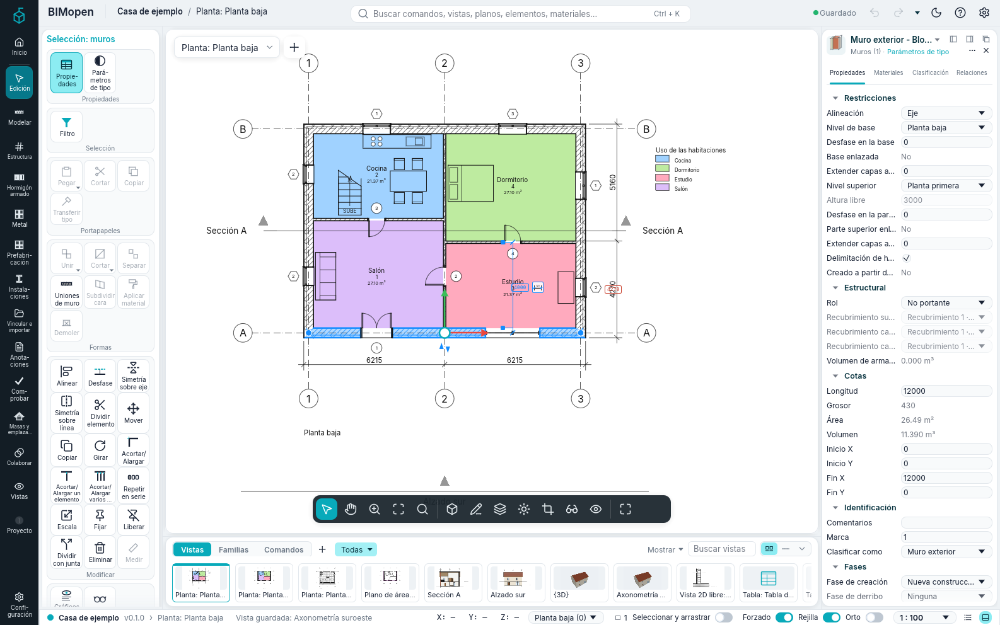
La ventana tiene estas partes:
- la barra lateral, en el borde izquierdo: la marca de BIMopen, que abre el menú de la aplicación, luego Inicio, la pestaña contextual Edición, las pestañas Modelar, Estructura, Hormigón armado, Metal, Prefabricación, Instalaciones, Vincular e importar, Anotaciones, Comprobar, Masas y emplazamiento, Colaborar, Vistas y Proyecto, y abajo Configuración;
- el panel de herramientas, junto a la barra lateral: los grupos de la pestaña elegida en la barra lateral, como bloques enmarcados de mosaicos;
- la barra superior: el proyecto y la vista activa, la búsqueda de comandos, que es también la línea de comandos, el estado del guardado, Deshacer y Rehacer, las herramientas de acceso rápido, el tema claro u oscuro, el menú ? y Opciones;
- el área de dibujo, en el centro: las vistas, cada una con su selector de vista arriba y la barra de vista abajo; mientras una herramienta trabaja, la franja de opciones la recorre por encima;
- el panel del elemento, a la derecha: las propiedades de la selección, o de la vista activa;
- la tira de vistas y familias, bajo el área de dibujo, que puedes ocultar (F9);
- la barra de estado, a lo largo del borde inferior.
Los paneles mantienen su anchura muestren lo que muestren: un nombre largo se acorta con «…» y su información sobre herramientas lo muestra entero. Arrastra el borde del panel de herramientas o del panel del elemento para ensancharlo o estrecharlo; BIMopen lo recuerda para la sesión siguiente. Un clic en la pestaña ya elegida de la barra lateral pliega el panel de herramientas, y un segundo clic lo vuelve a abrir. Sin pantalla táctil la interfaz es compacta, para dejar al área de dibujo todo el espacio posible; en el modo táctil los botones siguen siendo grandes (consulta Estilos de interfaz).
En árabe toda la ventana se refleja: la barra lateral y el panel de herramientas están a la derecha, el panel del elemento a la izquierda, y las tiras se leen de derecha a izquierda.
Menú de la aplicación
La marca de BIMopen, arriba en la barra lateral, abre el menú de la aplicación: los comandos que actúan sobre todo el proyecto. La entrada Inicio de la barra lateral muestra el proyecto con sus niveles, vistas, planos y tablas de planificación, y recuerda que los comandos de archivo están en este menú.
| Elemento | Qué hace |
|---|---|
| Nuevo | Cierra el proyecto actual e inicia uno nuevo a partir de la plantilla por defecto: dos niveles con sus plantas y los tipos por defecto |
| Abrir… | Abre un proyecto .bimopen, o abre un archivo .ifc como proyecto nuevo, elegido en un cuadro de diálogo de archivos. En el navegador, arrastra el archivo a la página |
| Proyecto de ejemplo | Abre la casa de ejemplo |
| Guardar Ctrl+S | Guarda el proyecto en su archivo; un proyecto nunca guardado pide un nombre, como Guardar como… |
| Guardar como… | Guarda el proyecto en un nuevo archivo .bimopen y sigue trabajando en ese archivo |
| Imprimir… Ctrl+P | Imprime planos en PDF |
| Exportar ▸ Exportar IFC4… | Escribe el modelo como archivo IFC4 |
| Exportar ▸ Exportar planta SVG… | Escribe la planta activa como dibujo SVG |
| Exportar ▸ Exportar vista PNG… | Escribe la vista activa como imagen PNG |
| Documentos abiertos | Enumera las ventanas de vista abiertas; haz clic en una para traerla al frente |
| Opciones | Abre el cuadro de diálogo Opciones |
| Salir | Cierra BIMopen (solo en el escritorio) |
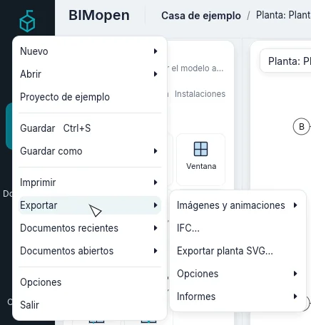
Nuevo, Abrir… y Proyecto de ejemplo sustituyen el proyecto actual sin preguntar: guárdalo antes si quieres conservarlo.
Warning
Los cambios sin guardar se pierden al elegir Nuevo, Abrir… o Proyecto de ejemplo. La barra superior indica Cambios sin guardar mientras haya cambios por guardar.
Opciones
El engranaje del extremo derecho de la barra superior, Configuración al pie de la barra lateral, o Menú de la aplicación ▸ Opciones, abre Opciones. Tiene, entre otros, estos parámetros:
| Parámetro | Valores | Efecto |
|---|---|---|
| Interfaz de usuario ▸ Idioma | Italiano, English, Deutsch, Français, Español, العربية | El idioma de toda la interfaz, al instante |
| Interfaz de usuario ▸ Tema | Claro, Oscuro | Los colores de la ventana. Oscuro también activa Invertir color de fondo. El sol o la luna de la barra superior también lo cambian |
| Interfaz de usuario ▸ Interfaz | BIMopen, Clásica | El estilo de la interfaz, véase Estilos de interfaz |
| Interfaz de usuario ▸ Modo táctil | Automático, Siempre, Nunca | La disposición para pantallas táctiles, véase Estilos de interfaz |
| Gráficos ▸ Invertir color de fondo | activado, desactivado | Vistas con fondo oscuro y líneas claras |
| Cubo de orientación ▸ Tamaño del cubo de orientación, Opacidad inactiva | Pequeño, Medio, Grande; de 0 % a 100 % | El tamaño del cubo, y cuánto se ve mientras el puntero está en otra parte |
| Cubo de orientación ▸ Mantener escena en posición vertical | activado, desactivado | Al arrastrar el cubo el modelo nunca se pone boca abajo; desactivado, la vista puede pasar por encima de la cima |
| Cubo de orientación ▸ Ajustar a la vista | activado, desactivado | Un clic en el cubo también ajusta el modelo a la ventana |
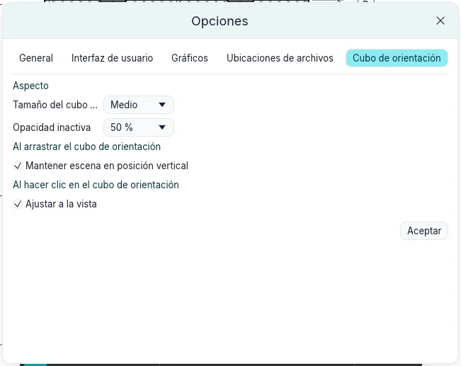
BIMopen recuerda el idioma, el tema y el estilo la próxima vez que se inicia.
Barra superior y herramientas de acceso rápido
La barra superior muestra, desde la izquierda, BIMopen, el nombre del proyecto (un clic abre Información del proyecto) y la vista activa; en el centro, la búsqueda de comandos; a la derecha:
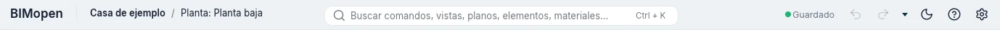
| Control | Qué hace |
|---|---|
| Guardado / Cambios sin guardar | El estado del guardado; un clic guarda, Ctrl+S |
| Deshacer | Deshace el último cambio, Ctrl+Z. Atenuado cuando no hay nada que deshacer |
| Rehacer | Rehace el cambio que se acaba de deshacer, Ctrl+Y. Atenuado cuando no hay nada que rehacer |
| Las herramientas de acceso rápido | Las herramientas que has añadido, y luego la flecha de la barra de herramientas de acceso rápido |
| El sol o la luna | Pasa al tema claro o al tema oscuro |
| ? | Ayuda F1, Comandos (todos los comandos de la línea de comandos, como escribir help) e Información (la versión, la licencia y los créditos) |
| El engranaje | Opciones |
Clic derecho sobre un mosaico del panel de herramientas y Añadir a la barra de herramientas de acceso rápido: la herramienta aparece en la barra superior y se inicia desde allí sea cual sea la entrada de la barra lateral abierta. Clic derecho sobre ella allí para Eliminar de la barra de herramientas de acceso rápido o Añadir separador (una línea a su derecha). La pequeña flecha tras las herramientas, Personalizar barra de herramientas de acceso rápido, enumera las herramientas predeterminadas (Abrir…, Guardar, Cota alineada, Etiquetar por categoría, Texto, Vista 3D, Sección, Cerrar ocultas, Cambiar de vista): marca una para mostrarla, desmárcala para quitarla. En el mismo menú, Personalizar barra de herramientas de acceso rápido… abre una ventana con las herramientas en orden: Subir y Bajar mueven la seleccionada, Añadir separador pone una línea después de ella, Quitar la quita (o quita una línea), Aceptar aplica. Las herramientas se conservan para las próximas sesiones.
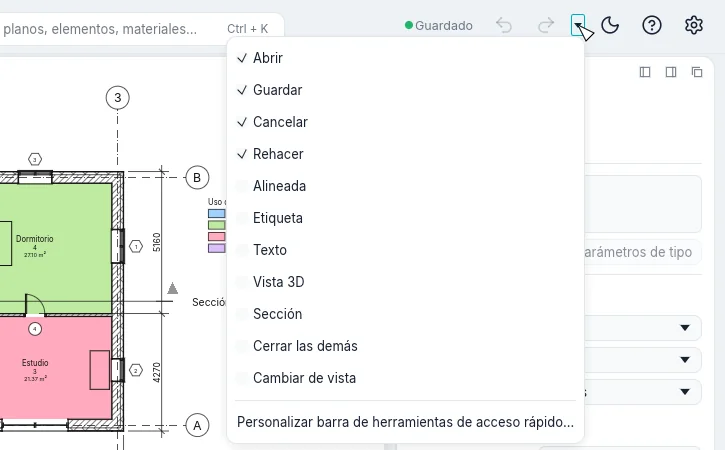
? ▸ Ayuda (F1) abre este manual, en el idioma de la interfaz, en el navegador. F1 abre la página de lo que estás haciendo: el cuadro de diálogo abierto, el mosaico bajo el ratón (su información termina con Pulse F1 para obtener más información) o la herramienta activa.
Barra lateral y panel de herramientas
La barra lateral muestra las pestañas de la cinta del estilo Clásico, con los mismos nombres y en el mismo orden. Haz clic en una pestaña: el panel de herramientas muestra sus grupos como bloques enmarcados, cada uno con su nombre abajo, y en cada bloque sus comandos en el orden de la cinta, tres por fila, como mosaicos con un icono y un nombre. Un nombre largo ocupa hasta tres líneas, partido entre palabras o en una sílaba con un guion. Un mosaico con una pequeña marca ▾ en la esquina tiene un menú: un clic en el mosaico inicia el comando, un clic en la marca abre el menú con sus variantes. Al dejar el ratón sobre un mosaico se muestra qué hace y, entre paréntesis, el atajo que puedes teclear para iniciarlo. Los comandos que BIMopen aún no ejecuta están en gris, y su información dice «Todavía no disponible»; Nivel, Rejilla y Plano guía están en gris en una vista 3D («No disponible en la vista 3D»). Cuando una pestaña tiene más comandos de los que el panel muestra a la vez (Modelar, Estructura), el panel se desplaza. Configuración, al pie de la barra lateral, abre Opciones.
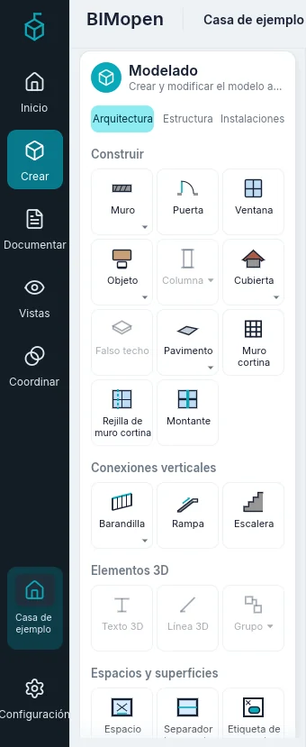
| Pestaña | Grupo | Comandos |
|---|---|---|
| Modelar | Construir | Muro ▾, Puerta, Ventana, Objeto ▾, Columna ▾, Cubierta ▾, Falso techo, Pavimento ▾, Muro cortina, Rejilla de muro cortina, Montante |
| Conexiones verticales | Barandilla ▾, Rampa, Escalera | |
| Elementos 3D | Texto 3D, Línea 3D, Grupo ▾ | |
| Espacios y superficies | Espacio, Separador de espacios, Etiqueta de espacio ▾, Superficie ▾, Contorno de superficie, Etiqueta de superficie ▾ | |
| Huecos | Por cara, Patinillo, En muro, Hueco vertical, Buhardilla | |
| Referencias | Nivel, Rejilla | |
| Plano de trabajo | Definir, Visualizar, Plano guía, Vista del plano | |
| Estructura | Elementos estructurales | Viga, Muro estructural ▾, Pilar estructural, Forjado estructural ▾, Cercha, Arriostramiento, Entramado de vigas |
| Uniones | Unión ▾, Uniones automáticas | |
| Cimentaciones | Zapata aislada, Zapata corrida, Losa de cimentación ▾ | |
| Elementos 3D | Objeto ▾, Texto 3D, Línea 3D, Grupo ▾ | |
| Huecos | Normal a la cara, Patinillo, En muro, Hueco vertical, Buhardilla | |
| Referencias | Nivel, Rejilla | |
| Plano de trabajo | Definir, Visualizar, Plano guía, Vista del plano | |
| Hormigón armado | Armaduras | Armadura, Armadura a lo largo de un recorrido, Armadura adaptable, Armadura por área, Malla por área, Malla individual, Recubrimiento, Manguito |
| Configuración | Opciones de recubrimiento, Opciones de armadura | |
| Plano de trabajo | Definir, Visualizar, Plano guía, Vista del plano | |
| Metal | Uniones | Unión ▾, Uniones automáticas |
| Elementos de carpintería metálica | Placa, Pernos ▾, Soldadura | |
| Mecanizados | Despunte, Corte inclinado, Acortar, Corte perfilado | |
| Cortes automáticos | Corte de extremo, Unión en esquina ▾, Intersección, Cortar con | |
| Plano de trabajo | Definir, Visualizar, Plano guía, Vista del plano | |
| Prefabricación | Subdivisión | Subdividir |
| Juntas | Piezas de montaje | |
| Armaduras | Armadura, Malla a medida | |
| Producción | Planos de taller, Exportar para CAM | |
| Configuración | Configuración de prefabricados, Perfiles conformados en frío | |
| Actualización automática | Suspender ▾ | |
| Instalaciones | Aire | Conducto, Conducto desde un trazado, Accesorio de unión de conducto, Accesorio de conducto, Aislamiento de conducto, Conducto flexible, Rejilla de aire |
| Componentes prefabricados | Elemento prefabricado, Recorrido de varios puntos | |
| Detalles de instalaciones | Refuerzo de conducto | |
| Esquemas P&ID | Editor P&ID | |
| Mecánica | Equipo mecánico, Dispositivo de regulación | |
| Otras instalaciones | Fontanería ▾, Electricidad ▾, Modelado ▾, Plano de trabajo ▾ | |
| Vincular e importar | Vincular | Vincular proyecto, Vincular IFC, Vincular CAD, Vincular topografía, Calcomanía ▾, Nube de puntos, Gestionar vínculos, Vincular PDF, Vincular imagen, Modelo federado ▾ |
| Importar | Importar CAD, Importar gbXML, Importar PDF, Importar imagen | |
| Cargar desde biblioteca | Cargar familia, Cargar como grupo, Insertar desde archivo ▾ | |
| Anotaciones | Cota | Alineada, Lineal, Angular, Radial, Diámetro, Longitud de arco, Cota de punto ▾ |
| Detalle | Línea de detalle, Región rellenada ▾, Símbolo de detalle ▾, Nube de revisión, Grupo 2D ▾ | |
| Texto | Texto, Corrector ortográfico | |
| Etiqueta | Etiqueta, Etiquetar todo, Material, Leyenda de colores, Etiquetas de vigas, Etiqueta multicategoría, Referencia a vista, Numeración de peldaños, Etiqueta de armaduras ▾, Nota codificada ▾, Leyenda de conductos, Leyenda de tuberías | |
| Símbolo | Símbolo, Dirección de luz, Símbolo de armadura, Recorrido de escalera | |
| Comprobar | Energía | Análisis energético |
| Comprobar | Comprobar interferencias, Mostrar cargas, Conexiones desconectadas, Cargas eléctricas, Ruta de evacuación | |
| Modelo de cálculo | Barra de cálculo, Panel de cálculo, Nudo de cálculo, Apoyos y vínculos, Modelo de cálculo automático, Resultados de cálculo | |
| Espacios y zonas | Espacio, Separador de espacios, Etiqueta de espacio, Nombres de espacios, Zona dibujada, Zona desde espacios | |
| Masas y emplazamiento | Masas | Visualizar masas ▾, Nueva masa, Colocar masa, Dibujar en 3D |
| Desde caras de masa | Muro cortina, Cubierta, Muro, Forjado, Terreno desde cara | |
| Emplazamiento | Terreno, Elemento de emplazamiento, Aparcamiento, Plataforma, Contexto circundante | |
| Modificar sitio | Dividir terreno, Fusionar terrenos, Subárea, Límite de propiedad, Nivelación, Etiqueta de curvas de nivel | |
| Colaborar | Trabajo compartido | Subproyectos, Sincronizar, Mostrar historial, Activar uso compartido, Grupo de trabajo activo, Atenuar los otros grupos, Recargar cambios, Liberar elementos, Solicitudes de permiso, Estado del uso compartido |
| Archivo | Restaurar copia de seguridad, Opciones de publicación | |
| Coordinación | Copiar y supervisar ▾, Revisión de coordinación ▾, Opciones de coordinación, Realinear anfitriones, Cambios del modelo federado | |
| Vistas | Gráficos | Ajustes de vista ▾, Visibilidad y gráficos, Filtros, Líneas finas, Mostrar líneas ocultas, Quitar líneas ocultas, Contorno de corte ▾ |
| Presentación | Imagen realista | |
| Crear | Vista 3D ▾, Sección, Detalle ampliado ▾, Planta ▾, Alzado ▾, Vista 2D libre, Duplicar vista ▾, Leyendas ▾, Tablas de planificación ▾, Cuadro de extensión | |
| Planos | Plano, Vista, Cajetín, Revisiones, Rejilla de guía, Desactivar vista | |
| Ventanas | Cambiar de vista ▾, Cerrar las demás, Mosaico, Cascada, Replicar, Maximizar, Paneles ▾ | |
| Índice del proyecto | El árbol de las vistas, tablas de planificación, planos y familias del proyecto | |
| Proyecto | Configuración | Materiales, Estilos por categoría, Forzado, Información del proyecto, Parámetros de proyecto, Unidades del proyecto, Copiar ajustes de un proyecto, Parámetros generales |
| Fases | Fases | |
| Alternativas | Alternativas de diseño, Versión principal | |
| Numeración | Renumerar | |
| Posición | Coordenadas compartidas ▾, Mover proyecto ▾ | |
| Gestión del proyecto | Imágenes del proyecto, Vista de apertura | |
| Selecciones | Guardar selección, Cargar selección, Editar selección | |
| Consulta | Seleccionar por número, Números de la selección, Advertencias |
En cursiva los comandos que BIMopen aún no ejecuta; ▾ marca un menú.
Pulsa y suelta Alt, o pulsa F10, para mostrar las sugerencias de teclas: una letra en cada pestaña de la barra lateral y, en los mosaicos de la pestaña abierta, el atajo de su herramienta. Teclea la letra de una pestaña para abrirla y luego las letras de un mosaico para iniciar su herramienta; Esc oculta las sugerencias. Mientras se ven, lo que tecleas no va a la línea de comandos.
Las herramientas de Modelar
Las herramientas más usadas para modelar están en Modelar:
| Grupo | Mosaicos |
|---|---|
| Construir | Muro WA, Puerta DR, Ventana WN, Cubierta RF, Pavimento SB, Objeto CM, Rejilla de muro cortina CG, Montante MU |
| Conexiones verticales | Barandilla RA, Escaleras ST |
| Espacios y superficies | Espacio RM, Separador de espacios RS, Superficie ▾ (Plano de áreas, Contorno de superficie, Superficie), Leyenda LG, Configuración ▾ (Cálculos de área y volumen, Esquemas de color) |
| Referencias | Nivel: se dibuja en un alzado o una sección, dos clics a la altura del nuevo nivel (desde una planta abre un alzado); Rejilla GR |
Contorno de superficie y Superficie funcionan en un plano de áreas: hasta que se abre uno están atenuados, y su información de herramienta indica que primero hay que abrir un plano de áreas.
Las herramientas de Anotaciones
| Grupo | Mosaicos |
|---|---|
| Cota | Alineada DI, Lineal DL, Angular DA |
| Texto | Texto TX |
| Detalle | Línea de detalle, Región rellenada, Región de máscara, Componente de detalle CD, Detalle repetido RD, Aislamiento IS |
| Etiqueta | Etiquetar todo TG |
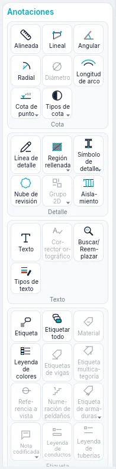
Las herramientas de Vistas
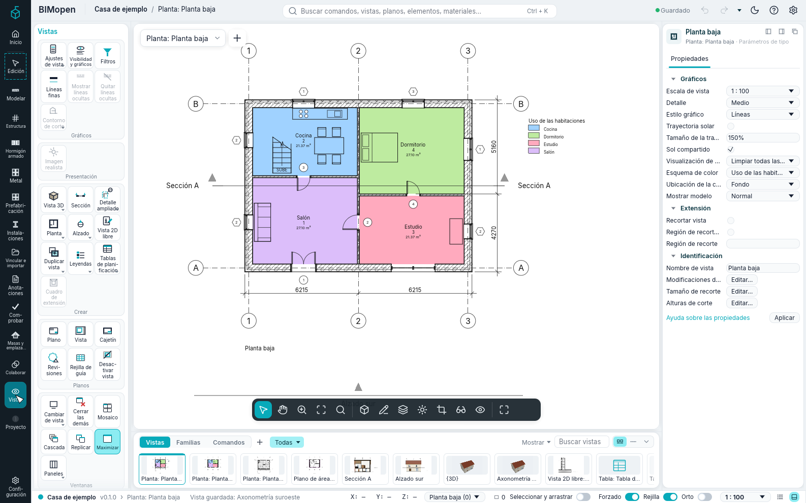
| Grupo | Mosaicos |
|---|---|
| Crear | Vista 3D ▾ (Vista 3D por defecto, Guardar vista), Planta ▾ (Plano de planta, Plano de áreas), Duplicar vista ▾ (Duplicar, Duplicar con detalles), Sección SE, Alzado ▾ (Alzado EL, Alzado de estructura), Detalle ampliado DT (una llamada), Vista 2D libre VD, Tablas de planificación ▾ (Tabla de planificación/cantidades, Tabla de materiales, Lista de planos, Bloque de notas, Tablas de planificación predefinidas) |
| Planos | Plano: un plano nuevo con el cajetín que elijas; Vista: coloca una vista en el plano abierto |
| Gráficos | Visibilidad y gráficos VG, Filtros, Plantillas de vista, Aplicar plantilla a la vista actual, Crear plantilla a partir de la vista actual |
| Ventanas | Cambiar de vista, Replicar, Cascada, Mosaico, Maximizar, Cerrar las demás, Paneles |
Planos ▸ Vista solo funciona mientras hay un plano abierto.
Guardar vista solo funciona mientras hay una vista 3D abierta, y Duplicar con detalles solo para vistas que no son 3D. Bajo las herramientas, la tarjeta Índice del proyecto contiene todo el árbol del proyecto.
Cada menú ▾ enumera también, atenuadas, las entradas aún no disponibles; la búsqueda de comandos las encuentra todas.
Las herramientas de Proyecto
| Grupo | Mosaicos |
|---|---|
| Configuración | Materiales, Información del proyecto, Estilos por categoría, Estilos de línea, Limpiar no utilizados, Unidades del proyecto UN, Forzado y Parámetros adicionales (Estilos de línea, Patrones de relleno) |
| Consulta | Comprobar: comprueba los huecos y las referencias del modelo e informa en la línea de comandos |
Forzado activa y desactiva el forzado de cursor para todo el programa: aparece resaltado mientras está activo, como el interruptor Forzado de la barra de estado. Parámetros adicionales ▸ Forzados de cursor… abre la ventana Forzado: los incrementos de longitud y angulares, los forzados a objetos y las modificaciones (ver Forzado).
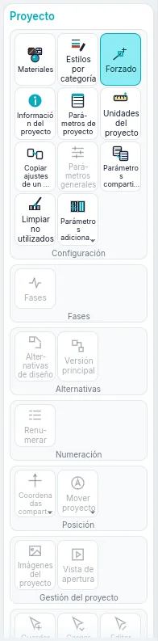
La pestaña contextual Edición
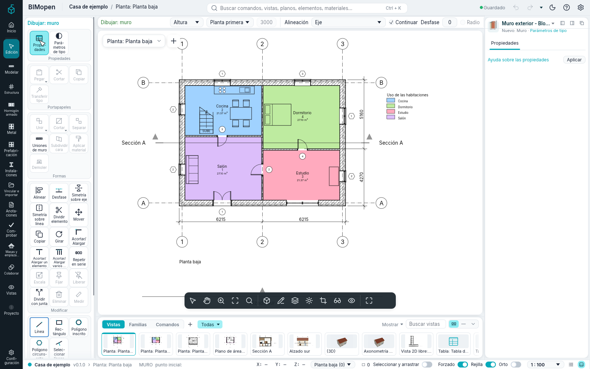
Cuando inicias una herramienta o seleccionas algo, la barra lateral elige sola la pestaña contextual Edición, dibujada con un borde discontinuo, y el panel de herramientas muestra sus grupos bajo el nombre de lo que estás haciendo, en el color de acento: Dibujar: muro mientras dibujas muros, Selección: muros con muros seleccionados, Selección múltiple con elementos de categorías distintas, Edición | … en los demás modos. Cuando la herramienta termina, o se borra la selección, el panel vuelve a la pestaña en la que estabas; Esc o un clic en un espacio vacío hacen lo mismo. Un clic en Edición muestra sus grupos en cualquier momento.
Siempre tiene estos grupos:
| Grupo | Mosaicos |
|---|---|
| Propiedades | Propiedades: muestra u oculta el panel del elemento; Parámetros de tipo: las propiedades del tipo de la selección, o del próximo elemento que colocará la herramienta |
| Modificar | Alinear AL, Desfase OF, Simetría sobre eje MM, Simetría sobre línea DM, Dividir elemento SL, Dividir con junta SG, Mover MV, Copiar CO, Girar RO, Acortar/Alargar TR, Acortar/Alargar un elemento, Acortar/Alargar varios elementos, Repetir en serie AR, Escala RE, Fijar PN, Liberar UP, Eliminar (Del) |
Eliminar solo funciona cuando hay algo seleccionado. El capítulo sobre selección y modificación describe las herramientas de Modificar.
Aparecen otros grupos según lo que esté seleccionado o según la herramienta:
| Cuándo | Grupo y mosaicos |
|---|---|
| Algo seleccionado | Selección: Filtro (véase Selección y modificación) |
| Puertas o ventanas seleccionadas | Hueco: Voltear sentido, Voltear bisagra |
| Muros seleccionados | Modificar muro: Unir arriba/abajo (los muros suben hasta la cubierta que tienen encima), Separar arriba/abajo |
| Un nivel seleccionado | Vista: Abrir planta |
| Secciones o alzados seleccionados | Sección: Dividir segmento (solo secciones), Voltear, Ir a vista |
| Una llamada seleccionada | Detalle: Ir a vista |
| Muros cortina seleccionados | Muro cortina: Rejilla de muro cortina, Montante, Panel |
| Herramienta Pavimento o Cubierta | Dibujar: Línea de contorno, Designar muros |
| Herramienta Escaleras o Barandilla | Modo: Finalizar modo de edición; Dibujar: Tramo o Líneas |
| Herramienta Montante | Colocación: Línea de rejilla, Segmento de línea de rejilla, Todas las líneas de rejilla |
| Una herramienta de detalle | Las formas de dibujo de la herramienta |
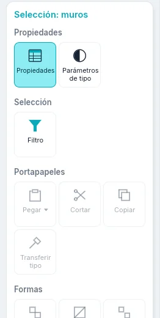
Franja de opciones
Mientras una herramienta trabaja, una franja recorre la parte superior de la vista: el nombre de lo que estás haciendo y luego los parámetros de la herramienta. Se aplican a los próximos elementos que coloques.
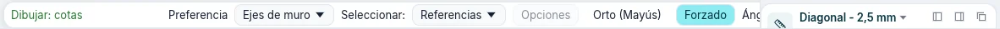
| Herramienta | Parámetros de la franja de opciones |
|---|---|
| Muro | Altura o Profundidad; el nivel al que llega el muro, o Sin conexión con su valor; Alineación; Continuar; Desfase; Radio (atenuado: los muros curvos aún no están disponibles); Unión en los extremos y Unión automática (atenuadas); Exterior a la izquierda o Exterior a la derecha (la barra espaciadora los intercambia) |
| Puerta, Ventana | Cargar familia; Modelar en sitio (atenuado); Etiquetar al colocar con Horizontal o Vertical, Directriz y su longitud; Etiquetas cargadas… (atenuado) |
| Objeto | Cargar familia; Modelar en sitio (atenuado); Girar tras insertar: el objeto colocado queda seleccionado y empieza Girar |
| Cubierta | La forma: A dos aguas, A cuatro aguas o Plana; Pendiente, de 5° a 60°; Voladizo, hasta 2 m |
| Escaleras | Anchura, en milímetros; Tipo de barandilla, o Ninguno |
| Cotas | Lo que el cursor designa primero en un muro: Ejes de muro o Caras de muro |
| Detalle ampliado (llamada) | La escala de la nueva vista de detalle, o Referencia a otra vista y la vista de detalle o 2D libre a la que apunta la llamada (siempre activada en una vista 2D libre) |
| Contorno de superficie | Línea o Seleccionar líneas; con Seleccionar líneas, Aplicar reglas de área o un Desfase |
Los interruptores Orto y Forzado de la barra de estado valen para todas las herramientas que dibujan líneas: Orto mantiene los segmentos horizontales o verticales, Forzado atrapa extremos, puntos medios e intersecciones. Con Orto desactivado, mantener pulsada Shift mientras dibujas da la misma restricción; con él activado, Shift la libera.
Panel del elemento
El panel del elemento, a la derecha, muestra y modifica los parámetros de aquello en lo que estás trabajando. Su cabecera ocupa una sola línea: el tipo con su menú y, debajo, la familia, el número de elementos seleccionados, como Muros (1), y Parámetros de tipo, que abre los parámetros del tipo. A su derecha, Cerrar (que borra la selección) y Más acciones (⋯: Parámetros de tipo y las acciones de la pestaña contextual). Bajo la cabecera, sus pestañas; las filas de los parámetros son bajas, con una columna ancha para los valores:
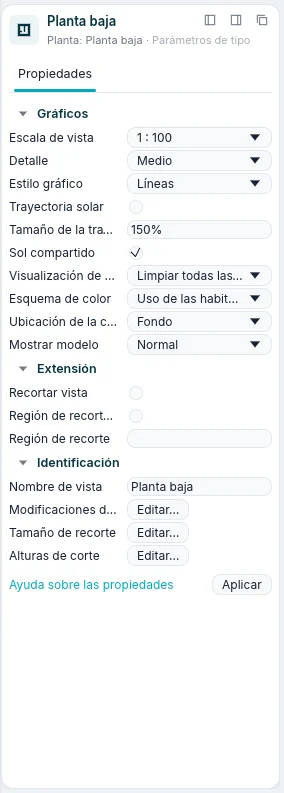
| Pestaña | Qué contiene |
|---|---|
| Propiedades | El selector de tipo y luego los parámetros, en grupos (Restricciones, Gráficos, Identificación…). Haz clic en el nombre de un grupo para plegarlo. Los valores en gris son de solo lectura: se calculan a partir del modelo. Aplicar, o Enter, confirma un valor que estás escribiendo |
| Materiales | Para muros, suelos y cubiertas: las capas del tipo con sus colores y espesores, y una vista previa por capas |
| Clasificación | La categoría, el tipo y la clase IFC |
| Relaciones | El nivel, el anfitrión, las puertas y ventanas que aloja, las vistas y las tablas de planificación en las que aparece |
El selector de tipo es la cabecera del panel: una pequeña vista previa del tipo (muros, suelos y cubiertas según sus capas, puertas, ventanas y componentes como una imagen), el nombre del tipo con ▾ y, debajo, la familia. Haz clic para elegir otro tipo: los elementos seleccionados cambian de tipo o, mientras una herramienta está activa, el siguiente elemento tendrá ese tipo. La lista se abre sobre las filas: busca los tipos por su nombre; están agrupados por familia, cada uno con su vista previa. Las flechas se mueven, Enter elige, Esc cierra la lista.
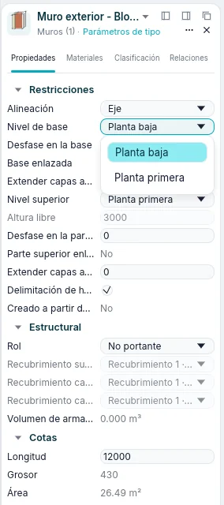
Lo que muestra el panel depende de la situación:
| Situación | El panel muestra |
|---|---|
| Nada seleccionado, ninguna herramienta | Las propiedades de la vista activa (escala, detalle, estilo gráfico…), o de la vista en la que se ha hecho clic en el Índice del proyecto |
| Una herramienta activa | El tipo del próximo elemento, como Nuevo: Muro, Nuevo: Puerta… |
| Un elemento seleccionado | Su tipo y sus parámetros de ejemplar |
| Varios elementos de una categoría | Su número, como Muros (3) |
| Elementos de categorías distintas | Selección múltiple, Comunes (5) y cuántos hay de cada categoría, como 3 × Muros |
Las longitudes se escriben y se leen en las unidades del proyecto (milímetros en un proyecto
nuevo). Puedes escribir un valor con su unidad, por ejemplo 2.7m.
Índice del proyecto
Vistas en la barra lateral muestra, bajo sus herramientas, el Índice del proyecto: las vistas, las tablas de planificación, los planos y las familias del proyecto en un árbol. Haz clic en ⊟ o ⊞ para plegar o desplegar una rama.
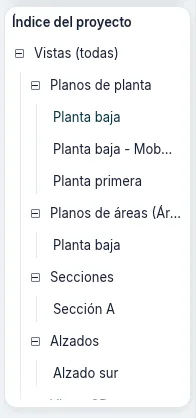
| Rama | Qué contiene |
|---|---|
| Vistas (todas) ▸ Planos de planta | Las plantas de todos los niveles, desde el más bajo, y las llamadas dibujadas en planta |
| Vistas (todas) ▸ Planos de áreas (…) | Los planos de áreas, una rama por esquema de áreas |
| Vistas (todas) ▸ Secciones, Alzados | Las secciones y los alzados |
| Vistas (todas) ▸ Vistas de detalle | Las llamadas dibujadas en secciones |
| Vistas (todas) ▸ Vistas 3D | {3D}, la vista 3D por defecto, y las vistas 3D guardadas |
| Vistas (todas) ▸ Vistas 2D libres | Las vistas 2D libres |
| Tablas de planificación/Cantidades | Las tablas de planificación del proyecto y luego las predefinidas |
| Planos (todos) | Los planos, como número - nombre |
| Familias | Los tipos del proyecto, por categoría: muros, puertas, ventanas, suelos, cubiertas, componentes y los demás |
Las ramas de planos de áreas, secciones, alzados, vistas de detalle y vistas 2D libres solo aparecen cuando contienen algo. La vista activa está escrita en negrita.
Con una vista:
- un clic muestra sus propiedades en el panel del elemento, sin abrirla;
- un doble clic la abre;
- un clic con el botón derecho abre su menú: Abrir, Cerrar (cierra sus ventanas), Duplicar vista ▸ (Duplicar, Duplicar con detalles), Aplicar plantilla de vista…, Crear plantilla a partir de la vista…, Eliminar, Cambiar nombre…, Propiedades.
El menú de un plano tiene Aplicar plantilla de vista a todas las vistas… en lugar de los dos elementos de plantilla, y no tiene Duplicar vista. {3D} no se puede eliminar ni cambiar de nombre.
Con una tabla de planificación del proyecto, un clic la selecciona, un doble clic la abre, y el menú del botón derecho tiene Abrir, Propiedades de tabla… y Eliminar. Una tabla de planificación predefinida se abre con un clic.
Con un tipo, bajo Familias, un doble clic abre sus parámetros de tipo; el menú del botón derecho tiene Parámetros de tipo, Duplicar…, Crear ejemplar (inicia la herramienta que lo coloca, con ese tipo) y Eliminar.
Tras un clic en el Índice del proyecto, el teclado se mueve en él: Up y Down pasan de una fila a otra (las propiedades de la vista aparecen en el panel del elemento), Right abre una rama, Left la cierra o sube a la rama que contiene la fila, Enter abre la vista.
Desde aquí las vistas van también a los planos. Arrastre una planta, una sección, un alzado, una vista 2D libre, una leyenda, una vista 3D guardada o una tabla de planificación al plano abierto: su ventana gráfica sigue al cursor y queda donde la suelta. O suéltela sobre el nombre de un plano en el árbol: el plano se abre y la ventana gráfica sigue al cursor hasta que hace clic. Mientras arrastra, el árbol se desplaza cuando el cursor se acerca a su borde. El menú contextual de un plano tiene Añadir vista…. Las vistas de un plano aparecen debajo de él; el menú contextual de una vista tiene Eliminar del plano, y el de Planos (todos) tiene Nuevo plano…. En una vista 3D el menú contextual también tiene Zoom a extensión 3D: todo el modelo, también los elementos ocultos en la vista. Una vista que ya está en un plano se rechaza, con el motivo en la línea de comandos; las leyendas y las tablas pueden ir en varios planos. Una vista 3D guardada aparece en el plano con las aristas vistas desde su cámara.
El menú contextual de una planta, una sección o una vista 2D libre tiene Buscar vistas de referencia: las vistas que muestran su símbolo y los planos en los que está; Ir a vista abre la elegida.
Tira de vistas y familias
La tira bajo el área de dibujo tiene tres modos, elegidos con los botones de su izquierda:
- Vistas: las vistas previas reales de las vistas, agrupadas en Todas, Abiertas (n), Plantas, Secciones, Alzados, 3D, Leyendas, Tablas de planificación y Planos. La vista actual está enmarcada, las abiertas tienen una línea de color de acento. Un clic en una vista previa abre la vista; el botón derecho abre el menú de la vista, con Abrir en la ventana activa; arrastrada sobre el plano abierto, o sobre la vista previa de un plano, se coloca allí. + crea una vista nueva: Vista 3D por defecto, Guardar vista, Duplicar, Plano o Tabla de planificación/cantidades.
- Familias: una vista previa por cada tipo, agrupada por categoría de familia. Un clic en una vista previa coloca ese tipo; arrastrada a una planta, se inserta donde se suelta. Una puerta o una ventana soltada cerca de un muro entra en el muro, a lo largo de él.
- Comandos: el historial de la línea de comandos. Un clic en una línea escrita la ejecuta de nuevo.
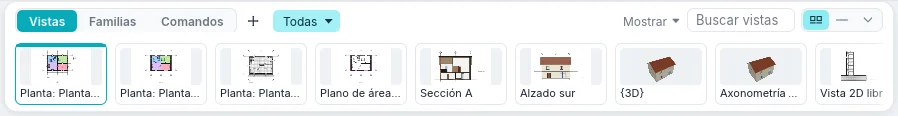
A la derecha, Mostrar filtra las vistas previas por disciplina y fase, el cuadro de búsqueda por nombre, y tres botones eligen el tamaño: Vistas previas, Compacta y Ocultar.
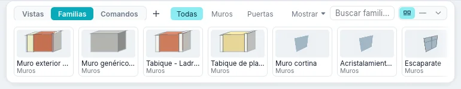
Cuando los grupos no caben junto a los modos, se recogen en un único menú, como Todas ▾. Para dar al área de dibujo el espacio de la tira, ocúltala con Barra de vistas, el último botón de la barra de estado, o con F9; el mismo botón o tecla la devuelve.
Paneles
El panel del elemento se puede mover. Arrástralo por su cabecera: se acopla a la izquierda o a la derecha del área de dibujo, o flota donde lo sueltas. Los botones de arriba a la derecha del panel lo acoplan a la izquierda, a la derecha o lo hacen flotante; Vistas ▸ Ventanas ▸ Paneles lo muestra u oculta, como a los demás paneles. Cada panel queda donde se puso también en las sesiones siguientes.
Mientras arrastras un panel solo se dibujan los sitios donde se acopla de verdad, cada uno como el panel que será. El sitio bajo el puntero se dibuja marcado, los demás apenas. En otro lugar no se dibuja nada, y el panel queda flotante donde lo sueltes.
Cuadros de diálogo
Cada cuadro de diálogo se abre en el centro de la pantalla, cada vez que se abre, aunque la última vez se hubiera movido o la ventana haya cambiado de tamaño. Una vez abierto, se queda donde está: arrástralo por su barra de título para moverlo. Un cambio dentro de él, como el interruptor Vista preliminar, no lo mueve.
Cada cuadro de diálogo tiene un tamaño fijo, que no cambia con su contenido. La excepción son los cuadros construidos alrededor de una lista o una tabla largas (materiales, visibilidad/gráficos, estilos de objeto, filtros, estilos y patrones de línea, patrones de relleno, grosores de línea, propiedades de tabla, parámetros de proyecto y compartidos, métodos abreviados de teclado, limpiar no utilizados, clases de exportación IFC, plantillas de vista): arrastrando uno de sus bordes se agrandan, nunca más pequeños que la primera vez que se abren ni más grandes que la pantalla, y la lista crece con ellos. Se vuelven a abrir en el centro con el último tamaño dado.
Área de dibujo y ventanas de vista
Cada vista que abres es una ventana en el área de dibujo. Una vista que se vuelve a abrir pasa al frente; siempre queda abierta al menos una ventana. Arriba a la izquierda de la vista, el selector de vista muestra su nombre: su menú enumera las vistas y organiza las ventanas, y + a su lado crea una vista nueva. Vistas ▸ Ventanas también las organiza:
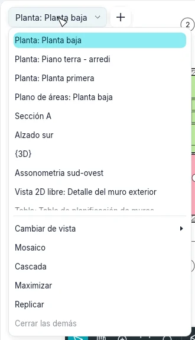
| Mosaico | Qué hace |
|---|---|
| Cambiar de vista | Enumera las ventanas abiertas; la activa aparece marcada |
| Replicar | Abre una segunda ventana de la vista activa, con su propio zoom |
| Cascada | Ventanas superpuestas, cada una con su barra de título: arrastra un título para mover una ventana y sus bordes para cambiar su tamaño |
| Mosaico | Todas las ventanas una junto a otra, cada una con una barra de título; la activa tiene el título y el marco de color |
| Maximizar | La ventana activa ocupa toda el área de dibujo; las demás esperan debajo |
| Cerrar las demás | Cierra todas las ventanas excepto la activa |
| Paneles | Muestra u oculta Propiedades, el Índice del proyecto, la Línea de comandos, la Barra de navegación, Métodos abreviados de teclado y Archivos recientes |
Haz clic en una ventana para activarla: las herramientas trabajan en la ventana activa, las demás solo muestran el modelo. En Mosaico y Cascada, la × de la barra de título de una ventana la cierra. Ctrl+Tab pasa a la ventana que usaste antes.
Mosaico coloca la ventana activa arriba a la izquierda y las demás después, desde la activada más recientemente; Cambiar de vista las lista en el mismo orden. Si vuelve a ordenarlas tras trabajar en otra ventana, esa pasa a ser la primera.
Opciones ▸ Interfaz de usuario ▸ Métodos abreviados de teclado lista los comandos con sus métodos abreviados. Busque un comando por su nombre o use Filtrar (Todo, Todos los definidos, Todos los no definidos, Todos los reservados); seleccione un comando, escriba las teclas en Pulse las nuevas teclas y haga clic en Asignar. Las mismas teclas pueden ir a varios comandos: escritas en el área de dibujo, la barra de estado muestra el primero, las flechas pasan a los demás y Enter o Space ejecuta el mostrado; Exportar… escribe todos los atajos en un archivo XML e Importar… lee de nuevo un archivo así como sus atajos (un archivo que no nombra ningún comando de BIMopen se rechaza, y sus atajos se mantienen); Eliminar quita las teclas que añadió. Sus métodos abreviados se conservan para las sesiones siguientes e inician el comando al escribirlos, como los predefinidos.
Una herramienta nunca cambia por sí sola la vista activa. Iniciada en una vista en la que no puede trabajar (una cubierta o una habitación en una vista 3D, un nivel en una planta, un área fuera de una planta de áreas), abre Ir a vista: las vistas adecuadas, con la planta del nivel activo ya elegida. Abrir vista abre la vista elegida e inicia allí la herramienta; Cancelar lo deja todo como estaba. Editar contorno de un suelo, una cubierta, una escalera o una barandilla, desde una sección o un alzado, pide del mismo modo una planta de su nivel, y una nueva sección o alzado deja activa la planta en la que se dibujó. Desplazar, Copiar, una Repetir en serie lineal y Simetría sobre línea funcionan también en secciones y alzados: a lo largo de la vista; el eje es el plano vertical perpendicular a la vista por su primer punto, se dibuje como se dibuje. Una Repetir en serie radial funciona en plantas y vistas 3D: en una sección o un alzado sigue elegida, pero sus clics no hacen nada y la barra de estado pide Lineal.
Vistas en ventanas separadas
Una vista puede salir del área de dibujo: Ventana separada en su menú (clic derecho en el Índice del proyecto, en su miniatura en la tira de vistas o en la barra de título de una ventana en mosaico), o arrastre la barra de título de una ventana en mosaico o en cascada fuera del área de dibujo. En el ordenador la vista se abre en una ventana del sistema propia, que puede llevar también a otro monitor, redimensionar y maximizar; en la web flota en la página, porque el navegador no abre otras ventanas. Una vista flotante en el programa tiene también Ventana del sistema, para llevarla a una ventana del sistema.
Puede separar varias vistas a la vez. Cada una conserva sus herramientas, su barra de vista y, en 3D, su cubo de orientación; la selección se ve en todas, y la vista activa es la última en la que hizo clic. Devolver a la ventana principal, arriba en la vista, la devuelve al área de dibujo; una vista flotante vuelve también arrastrándola a la franja superior del área de dibujo, que se resalta. Cerrar la ventana del sistema la devuelve del mismo modo. Dónde estaba cada vista separada queda con el proyecto, y al abrirlo de nuevo las vistas separadas vuelven a su sitio.
Dibujar en cualquier vista
Un muro se dibuja igual en una planta y en una vista 3D, sobre el plano del nivel: desde el primer clic el muro que dibuja sigue al cursor, en la planta como su huella y en 3D como su volumen transparente, a su altura y espesor; una línea discontinua prolonga su eje, y otras lo mantienen alineado con los puntos ya pulsados de la cadena. La cota temporal, azul con sus líneas de referencia y trazos, da la longitud y el ángulo; teclee una longitud y pulse Enter para dibujar el muro con esa longitud. Los forzados (extremos, puntos medios, intersecciones, perpendicular, caras y ejes de otros muros) funcionan también en 3D. El muro seleccionado en una vista 3D muestra, como en planta, sus cotas temporales, las flechas para invertirlo y los extremos para arrastrar. En secciones y alzados no se dibujan muros: Ir a vista ofrece una planta o la vista 3D.
Cubiertas y suelos se dibujan también en la vista 3D, sobre el plano de su nivel: Designar muros toma el muro bajo el cursor (su coronación se resalta en naranja, Tab toma toda la cadena), las líneas se dibujan con todas las herramientas de boceto y con cotas temporales, y Editar huella de una cubierta o un suelo abre su boceto en 3D. Editar contorno de un muro funciona en 3D sobre el plano del muro, y en una sección o alzado que lo ve de frente.
Mientras dibuja o edita un boceto puede cambiar de vista (miniaturas, Índice del proyecto, ventanas separadas): la herramienta sigue activa y continúa en la nueva vista si puede trabajar allí. Una cadena de muros empezada en planta continúa en 3D desde su último punto, y un boceto de perfil empezado en un alzado continúa en 3D. El muro en curso y el boceto se ven en todas las vistas abiertas a la vez.
Barra de vista
Abajo en el centro de cada vista, una barra oscura de botones:
| Botón | Qué hace |
|---|---|
| Seleccionar y modificar | Termina el modo de navegación y vuelve a la selección, Esc |
| Encuadre, Órbita (3D), Zoom | Con uno activo, el botón izquierdo arrastra la vista; Esc lo termina |
| Zoom para ajustar | Ajusta toda la vista a la ventana, Home |
| Opciones de zoom | El menú del zoom, véase más abajo |
| El estilo gráfico | Estructura alámbrica, Líneas, Sombreado, Sombreado con aristas, Colores planos |
| El detalle | Bajo, Medio o Alto |
| Sol y sombras | En las vistas 3D, el sol y sus sombras |
| Recorte | Recortar vista recorta la vista a su región de recorte, o deja de recortarla; Mostrar región de recorte muestra u oculta su marco |
| Aislar temporalmente | Oculta o aísla elementos o categorías en esta vista hasta que lo restableces; aparece enmarcado mientras está activo |
| Revelar ocultos | Muestra los elementos ocultos, para volver a mostrarlos |
| Pantalla completa | La vista sola en la ventana; Salir de pantalla completa vuelve atrás |
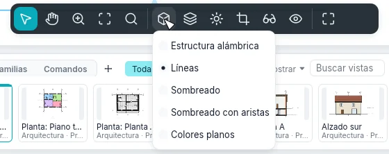
La escala de la vista está a la derecha de la barra de estado, por ejemplo 1 : 100: abre la
lista de escalas; en Personalizada escribe otra, como 1 : 75, y pulsa Enter. Un plano no
tiene escala propia: sus vistas tienen la suya.
Zoom
Opciones de zoom, en la barra de vista, abre el menú del zoom: Ampliar, Reducir, Zoom en región (arrastre un rectángulo sobre la vista; Esc lo anula), Alejar (2x), Ajustar a la ventana, Ajustar todo a la ventana (todas las ventanas abiertas), Zoom a tamaño de plano (la vista al tamaño en que se imprime), y Encuadre/zoom anterior y Encuadre/zoom siguiente, que van atrás y adelante por los encuadres de esa ventana. Escritos: ZR, ZO, ZF, ZA, ZS, ZP.
La rueda de navegación no está disponible.
Desplazarse por las vistas
| En plantas, secciones, alzados y planos | |
|---|---|
| Rueda del ratón | Amplía y reduce en el cursor |
| Arrastrar con el botón central | Encuadra |
| Arrastrar con el botón izquierdo | Una ventana de selección, o mueve los elementos seleccionados (Selección y modificación) |
| Home | Ajusta toda la vista a la ventana |
| En vistas 3D | |
|---|---|
| Arrastrar con el botón derecho, o Shift + botón central | Orbita alrededor del modelo |
| Arrastrar con el botón central | Encuadra |
| Arrastrar con el botón izquierdo | Una ventana de selección, o mueve los elementos seleccionados |
| Rueda del ratón | Amplía y reduce |
| Home | Ajusta todo el modelo a la ventana |
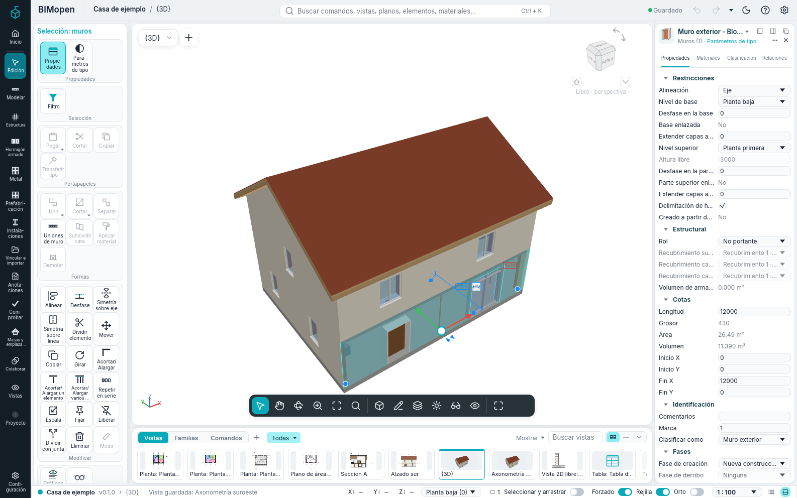
Un pequeño trípode en la esquina inferior de la vista 3D muestra las direcciones de los ejes: X rojo, Y verde, Z azul. Una vista 3D guardada recuerda dónde la dejaste. Sobre la selección, las flechas de desplazamiento permiten arrastrarla: arrastra una flecha para mover a lo largo de ella, el centro para mover libremente en planta; la distancia se ve mientras arrastras, y al soltar se mueve como con Mover.
En 3D la rueda del ratón hace zoom manteniendo fijo el punto del modelo bajo el cursor, y la órbita gira alrededor del centro de la selección, o alrededor del punto al que mira la vista cuando no hay nada seleccionado.
El Cubo de orientación, en la esquina superior de la vista 3D, gira con el modelo. Sus aristas y vértices están achaflanados y cada parte es un objetivo propio: las seis caras (ARRIBA, ABAJO, FRENTE, DETRÁS, DERECHA, IZQUIERDA, sus nombres escritos en ellas en perspectiva y girando con ellas) miran de frente ese lado; las doce franjas de las aristas miran desde entre dos lados; los ocho triángulos de los vértices desde entre tres (una vista isométrica). La parte bajo el puntero se tiñe con el color de resaltado, la parte desde la que mira ahora la vista queda resaltada; un clic gira la vista hasta allí en una breve transición. Arrastre el cubo para orbitar.
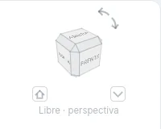
Bajo el cubo se escribe la orientación de la vista: Frente · perspectiva, Arriba – Frente · perspectiva, Isométrica · perspectiva, o Libre · perspectiva cuando la vista no mira desde ninguna parte del cubo.
Cuando una cara se ve de frente, cuatro triángulos alrededor del cubo (Rotar hacia arriba, Rotar hacia abajo, Rotar a la izquierda, Rotar a la derecha) giran la vista un cuarto hacia la cara más allá de ese lado. Las dos flechas curvas arriba a la derecha, Girar a la izquierda y Girar a la derecha, giran la imagen un cuarto de vuelta en sentido antihorario u horario.
El pequeño botón de la casa abajo a la izquierda, Vista de partida, vuelve a la vista de partida; con un clic derecho sobre él, Establecer como vista de partida hace de la vista actual la de partida (cada vista 3D tiene la suya, guardada con el proyecto). El pequeño botón abajo a la derecha, Menú del cubo, o un clic derecho sobre el cubo, abre el menú: Ortogonal / Perspectiva (por ahora la vista es solo en perspectiva: Ortogonal está en gris, «Todavía no disponible»); Establecer como vista de partida; Ajustar a la ventana, que ajusta el modelo a la ventana; Opciones…, que abre la página Cubo de orientación de Opciones. De derecha a izquierda (árabe) el cubo se sitúa arriba a la izquierda y los dos pequeños botones cambian de lado; las flechas se quedan donde apuntan.
El menú contextual de una vista
Haz clic con el botón derecho en una vista mientras no hay ninguna herramienta activa. Si el cursor está sobre un elemento que no está seleccionado, primero se selecciona el elemento. El menú tiene, con una selección, primero los comandos de modificación (Mover, Copiar, Girar, Alinear, Desfase y los demás), luego:
- Cancelar: borra la selección;
- Seleccionar todos los ejemplares ▸ Visibles en la vista o ▸ En todo el proyecto: los elementos del mismo tipo; Seleccionar anterior: la selección hecha antes;
- Ocultar en vista ▸ Elementos o ▸ Categoría: oculta los elementos seleccionados, o sus categorías completas, en esta vista;
- Gráficos personalizados ▸ Por categoría…: abre Visibilidad y gráficos con las categorías de la selección;
- Visibilidad y gráficos….
Mientras hay una herramienta activa, un clic con el botón derecho abre en cambio el menú de la herramienta, y el paso en curso se mantiene: Cancelar (lo que hace Esc, que sigue cancelando el paso), Repetir [comando], Modificaciones de forzado ▸ (el forzado del siguiente punto, como las teclas de dos letras; en todas las vistas, ver Forzado), Zoom en región, Alejar (2x), Ajustar a la ventana, Encuadre/zoom anterior, Encuadre/zoom siguiente y Propiedades. Es el mismo en plantas, secciones, alzados, vistas 3D y en los planos. Con el menú abierto, Esc o un clic en la vista solo lo cierran.
Forzado
Parámetros adicionales ▸ Forzados de cursor… (en el estilo BIMopen el comando Forzados de cursor…) abre la ventana Forzado, la misma en los dos estilos:
- Forzados desactivados lo apaga todo (como el interruptor Forzado de la barra de estado, que queda igual al volver a abrir el programa).
- Incrementos de forzado de cotas de longitud y de cotas angulares, cada uno con su casilla: valores separados por punto y coma (por defecto 1000; 100; 10 mm y 90°; 45°; 15°; 5°; 1°). El zoom elige el paso: con el zoom cercano, pasos más finos.
- Forzados de objetos: una casilla para Punto final, Punto medio, Cercano, Rejilla de plano de trabajo, Cuadrante, Intersección, Centro, Perpendicular, Tangente y Objetos remotos, con sus dos letras; Marcar todo y Desmarcar todo. Con Cercano apagado, la línea bajo el cursor sigue ofreciendo sus extremos y su punto medio, aunque estén lejos. Objetos remotos (apagado al principio) alinea el punto, en horizontal o en vertical, con los extremos de líneas lejanas, con una guía discontinua.
- Modificaciones temporales: la lista de las dos letras que valen para un punto.
- Restablecer valores por defecto lo deja todo como al principio.
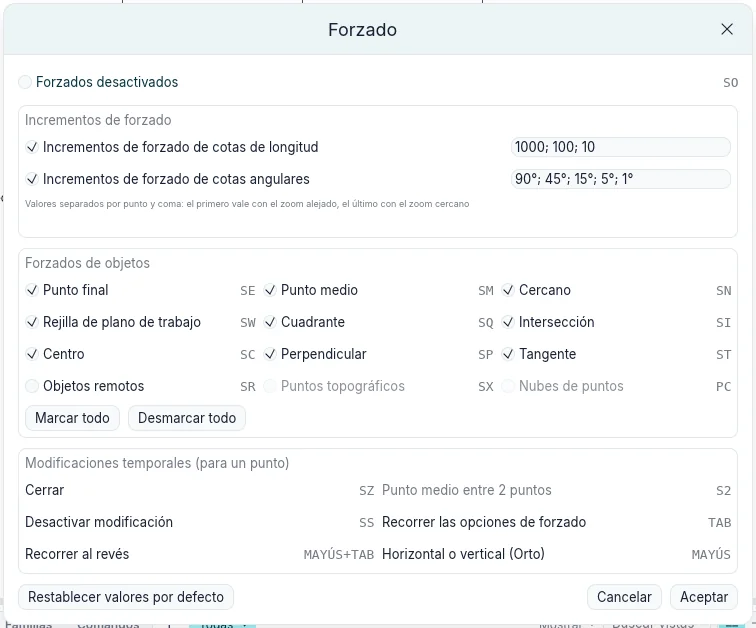
Los ajustes son del programa, no del proyecto: se mantienen entre sesiones.
Al dibujar desde un punto (muros, líneas, rejillas, planos de referencia, bocetos y el segundo
rayo de Girar) el segmento fuerza su dirección del mismo modo en todas las vistas: horizontal
o vertical, paralela o perpendicular a una línea cercana, o un múltiplo del incremento angular que
da el zoom; solo cuando el cursor está a pocos píxeles de esa dirección, si no el ángulo queda
libre. Una guía discontinua sigue la dirección, un arco con el valor muestra el ángulo, y la barra
de estado dice por ejemplo Forzado: Ángulo 30° · paso 15°. La longitud se redondea al incremento
de longitud. Ángulo medido desde, en la barra de opciones, cuenta los ángulos desde el Eje
horizontal de la vista o desde el Segmento anterior. En la vista 3D todo se mide sobre el
plano de trabajo (el plano del nivel). En la línea de comandos
snap {"angles":[45,15],"objects":{"quadrant":false}} cambia los ajustes y snap solo los muestra.
El comando anglesnap 0,0 3,0.02 (también por MCP, y snap con dos puntos) devuelve la
dirección a la que se fuerza un segmento, con las mismas reglas que todas las vistas.
En la parte superior del menú, Repetir [comando] vuelve a iniciar la última herramienta usada; Enter hace lo mismo cuando no hay ninguna herramienta activa y la línea de comandos está vacía. El menú es el mismo en plantas, secciones y vistas 3D.
Búsqueda de comandos y línea de comandos
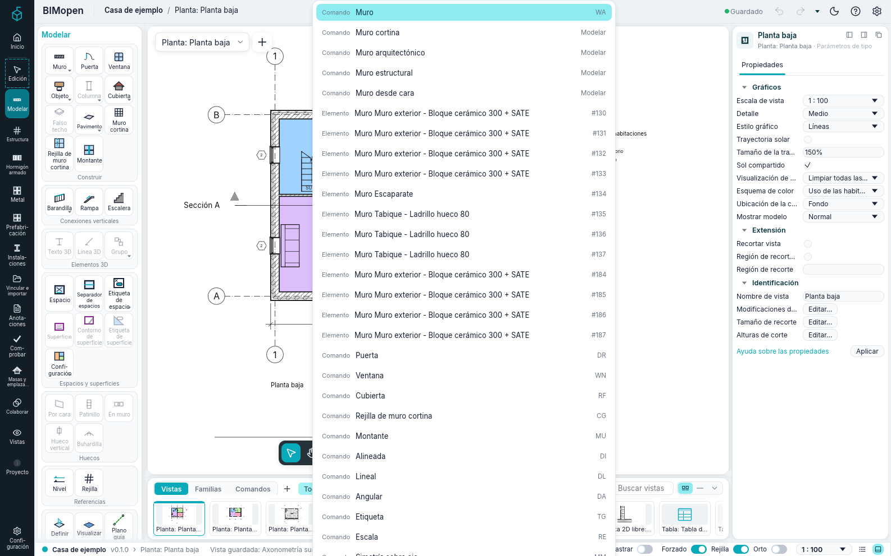
Pulsa Ctrl+K, o haz clic en el cuadro de búsqueda del centro de la barra superior, y escribe unas letras: la lista muestra los comandos, vistas, planos, tablas de planificación, elementos y materiales que coinciden. Haz clic en un resultado, o elígelo con las flechas y pulsa Enter: un comando se inicia, una vista se abre, un elemento se selecciona y se muestra, un material se abre en Materiales. La búsqueda encuentra cada comando del panel de herramientas, también los de la tarjeta contextual (con una vista seleccionada en un plano, «activar» encuentra Activar vista), y lo ejecuta como su mosaico.
El cuadro de búsqueda es también la línea de comandos. No hace falta hacer clic en él: todo lo que
escribes en una vista mientras no se está editando ningún campo va allí. Enter ejecuta tal
cual un atajo de teclado (WA, DR, ZF…) o un comando con sus argumentos (wall 0,0 5,0);
Up y Down recuperan las líneas escritas antes. El registro de lo que se ha hecho, los
comandos ejecutados, sus resultados y los errores en rojo, está en Registro de comandos, en el
extremo derecho de la barra de estado, y en el modo Comandos de la tira. El capítulo sobre la
línea de comandos describe los comandos.
Barra de estado
A la izquierda, la barra de estado muestra el proyecto, la versión y la vista activa, y luego:
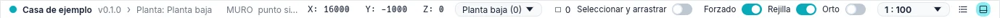
- mientras hay una herramienta activa, lo que espera la herramienta, por ejemplo
WALL next point [Esc to finish]:; - sin herramienta, la categoría y el tipo del elemento bajo el cursor, como Muros : Muro exterior - Bloque cerámico 300 + SATE;
- mientras arrastras, la longitud del desplazamiento, como Mover: 1500;
- en los demás casos, la última línea del registro de comandos.
A la derecha: las coordenadas del cursor (X, Y, Z) en metros; el nivel activo, cuyo menú abre la planta de otro nivel; el número de elementos seleccionados, que abre Filtro; los interruptores Seleccionar y arrastrar (arrastrar elementos sin seleccionarlos antes), Forzado, Rejilla y Orto; la escala de la vista; Registro de comandos; y Barra de vistas (F9), que oculta la tira de vistas o la vuelve a mostrar.
La selección, en resumen
El capítulo sobre selección y modificación describe la selección en detalle. Lo esencial:
- haz clic en un elemento para seleccionarlo; haz clic en un punto vacío para borrar la selección;
- Ctrl + clic añade un elemento a la selección, Shift + clic lo quita; Tab resalta el elemento siguiente bajo el cursor, o una cadena de muros unidos;
- arrastra de izquierda a derecha para seleccionar lo que está por completo dentro del rectángulo, y de derecha a izquierda para seleccionar lo que toca;
- arrastra un elemento seleccionado para moverlo;
- Ctrl+A selecciona los elementos del nivel de la planta abierta, o de todo el modelo en una vista 3D; Del elimina la selección; Esc la borra.
En una pantalla táctil se hace lo mismo con los dedos y el lápiz: véase el modo táctil.